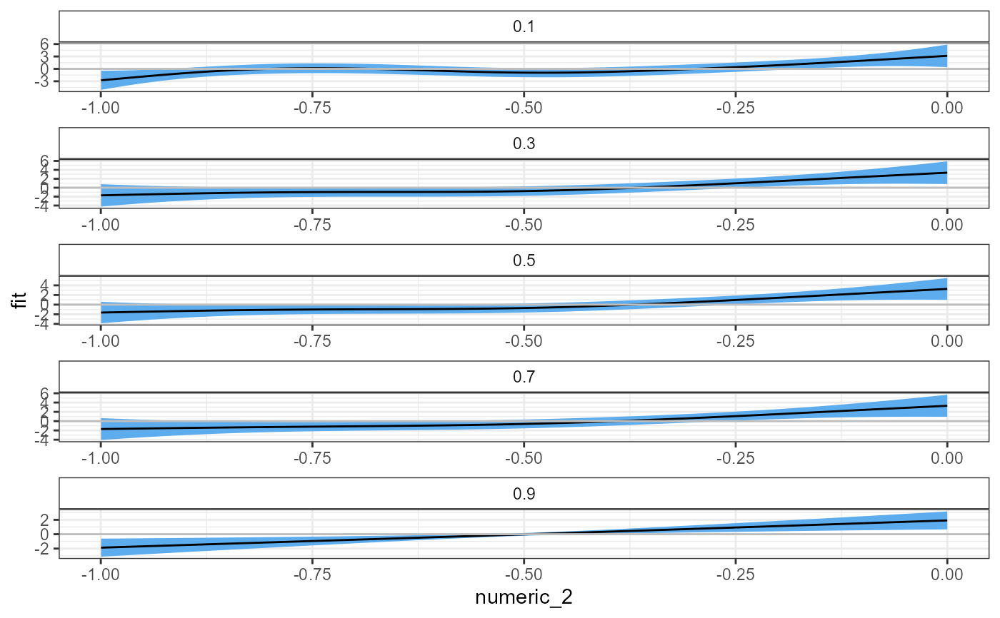
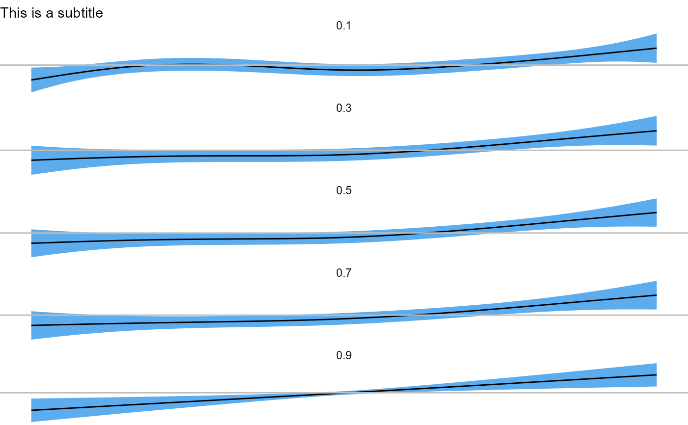

facet_smooth_plot.Rdfacet_smooth_plot creates a multi-panel plot of smooth term plots with confidence intervals using ggplot2.
facet_smooth_plot( qgam, pred, ncol = 1, xlab = NULL, ylab = "fit", scales = "free", size = 0.5, fill = "steelblue2", color = "black", alpha = 1)
| qgam | An mqgam object created with |
|---|---|
| pred | The predictor term to plot. Note: This is no longer identical to the |
| ncol | The number of columns of the multi-panel plot. |
| xlab | The x-axis label. |
| ylab | The y-axis label. |
| scales | Should scales be free ( |
| size | Size argument for the ggplot object; specifies the size of the line. |
| fill | Color argument for the ggplot object; specifies the color of the confidence interval. |
| color | Color argument for the ggplot object; specifies the color of the line. |
| alpha | Alpha argument for the ggplot object; specifies the transparency of the confidence interval. |
A ggplot object.
Fasiolo M., Goude Y., Nedellec R., & Wood S. N. (2017). Fast calibrated additive quantile regression. URL: https://arxiv.org/abs/1707.03307
van Rij J, Wieling M, Baayen R, & van Rijn H (2020). itsadug: Interpreting Time Series and Autocorrelated Data Using GAMMs. R package version 2.4.
Wickham, H. (2016). ggplot2: Elegant Graphics for Data Analysis. Springer-Verlag New York.
D. Schmitz
# basic example facet_smooth_plot(qgam = mtqgam_mqgam, pred = "numeric_2") #> i Plotting multi-panel plot for smooth term numeric_2.  # combining facet_smooth_plot with ggplot2 facet_smooth_plot(qgam = mtqgam_mqgam, pred = "numeric_2") + theme_void() + labs(subtitle = "This is a subtitle") #> i Plotting multi-panel plot for smooth term numeric_2. 